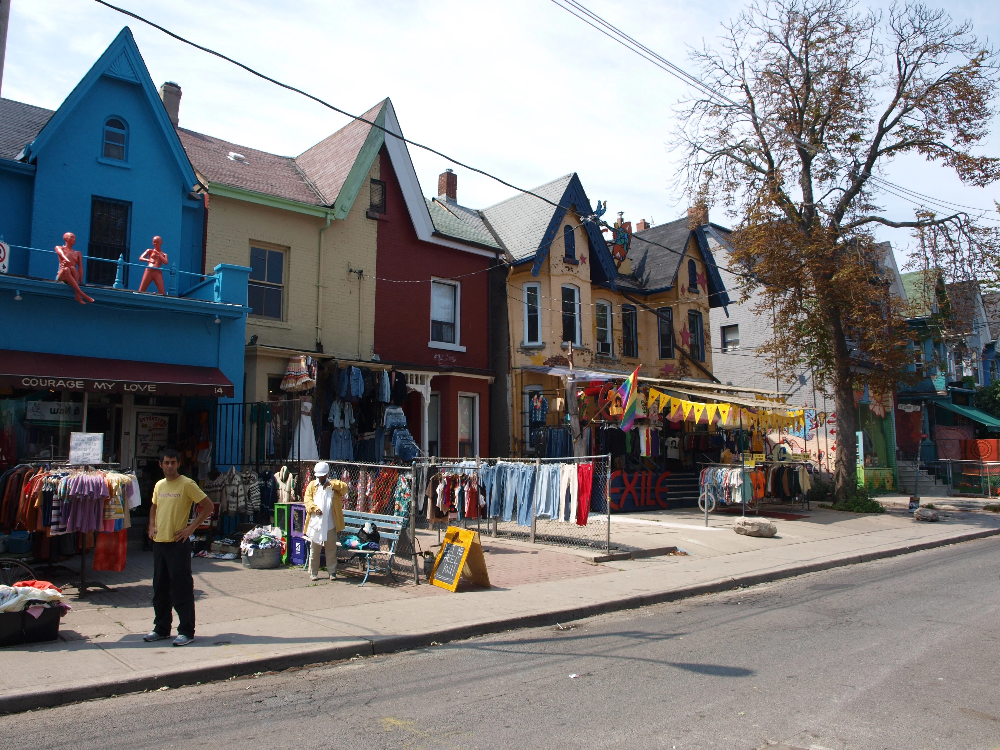
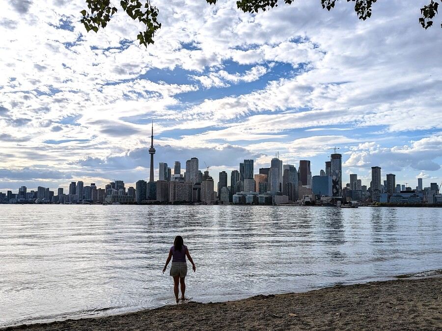

Descubre la ciudad de Toronto
Recorre los principales atractivos de Toronto, desde la emblemática CN Tower hasta sus parques, calles y barrios llenos de vida.
ver más
Recorre los principales atractivos de Toronto, desde la emblemática CN Tower hasta sus parques, calles y barrios llenos de vida.
ver más
Conocé barrios como Kensington Market, Distillery District y Yorkville, cada uno con su propia historia, arquitectura y ambiente.
ver más
Disfrutá de los parques, las islas de Toronto y las actividades al aire libre junto al lago Ontario, ideales para conocer otro lado de la ciudad.
ver más